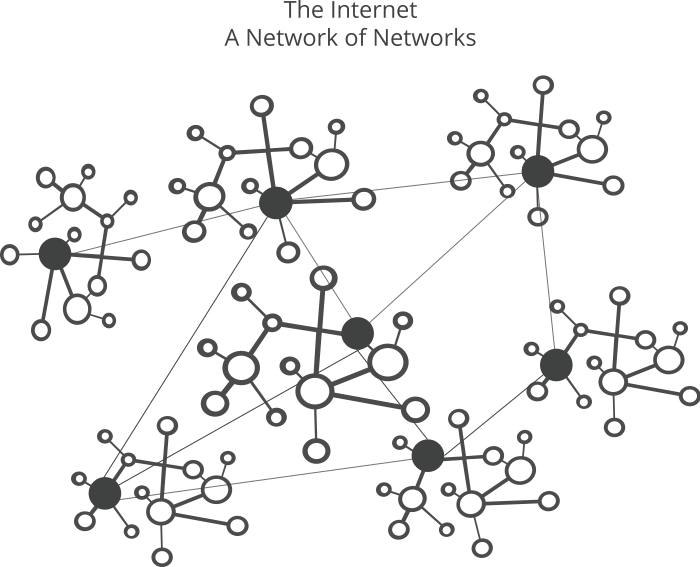
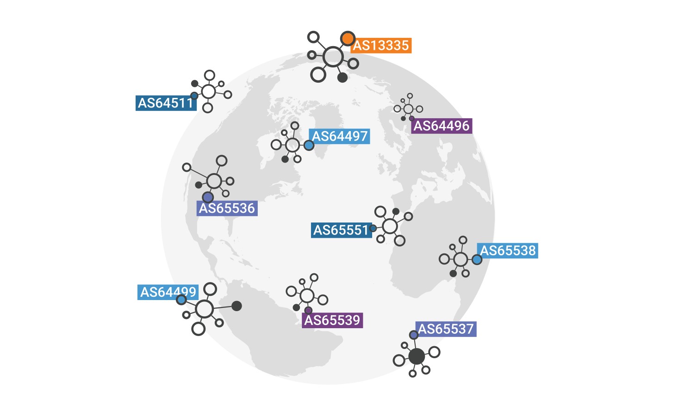

You may have heard that the internet is a best-effort delivery system. Given that the content of the internet is always changing the servers that host that content need to change too. This requires the internet to be a collection of Autonomous Systems (ASes) that are governed by business and policy rules. ASes are large networks or groups of networks that have a unified routing policy that are usually under a single entity that can direct the traffic within its own network. My main analysis here is focused on the Border Gateway Protocol that dictates how each AS connects so your origin and destination have a way to connect and often multiple! Below are the results of viewing the public BGP feeds (Route-Views), how they compare to traceroutes, the other domains, and the ASes themselves.1
A traceroute, just like requesting for a web page is a packet that in this instance is designed to send back the information of what network nodes/routers it passes through to get to its destination. Traceroutes also tell you the IP addresses of each hop, the time of each hop, and if available, their hostnames, allowing users to identify the network infrastructure.
Route-Views, while also a utility, is a project that acts as an observatory for the Internet's routing information by collecting BGP (Border Gateway Protocol) routing table information from diverse points across the globe. The routing tables store the information on each Autonomous Systems (ASes) so it knows what other ASes it can get to by communicating with its neighbors. It functions by maintaining dedicated Route Collectors (RCs) such as the one in Chicago which collect information from volunteer routers (BGP Peers) from hundreds of ASes. The data these peers share is both their actively selected path and all available routes for every Internet domain. The tool itself is critical for many tasks such as researchers and engineers to analyze the topology and stability of the Internet and to diagnose wide-area routing issues. In theory, any IP could serve as a Route Collector such as Carleton College, while Route Collectors require special setup and more overhead to be publicly accessible that make it a better option to connect to the RC in Chicago.
The End-to-End AS paths are formed by concatenating Carleton College's route prefix, AS 26557 advertising to AS 6939 (Route Collector in Chicago). The path from Carleton to its primary upstream provider AS 6939 (CenturyLink) is extended due to AS Path connecting to the Chicago Route Collector.
6557 26557 26557 6939 199524 15169 396982However, when comparing these paths against the actual paths obtained via traceroute for academic destinations like stanford.edu or uct.ac.za, there is zero overlap in the intermediate Autonomous Systems, as Carleton's router overrides the commercial path and directs academic traffic through Research & Education paths like AS 1659 and AS 4079. Consequently, the Route-Views data exclusively includes Tier-1 commercial ASes such as AS 1299 (Telia) that the R&E traffic skips, while the traceroute data exclusively contains the R&E backbone ASes such as internet2 (for nationwide access) and northernlights as a regional provider.
Here we see that the shortest end-to-end path is to regex101.com (6 AS hops), while the longest is to baidu.com (8 AS hops).
The low variance with domestic sites like db.com (with an AS Path Length Difference of only 1) and corndog.io (with an AS Path Length Difference of 2) show low variance in the table below shows how the results from having many direct peering or simple transit options, meaning the routes are consistently short and efficient. Conversely, foreign or intercontinental sites like uct.ac.za (South Africa) and baidu.com (China) exhibit high variance (differences of 3 and 4, respectively). High variance in path length, along with the presence of repeated ASes (like the multiple AS 4134 prepends for the Chinese prefix), reflects the challenges of long-haul routing. The traffic must often pass through a greater variety of international carriers and submarine cables, leading to more diverse and sometimes strategically lengthened (or "engineered") paths.
| Endpoint | Total Routes | Min Path Length | Max Path Length | Difference | Median Path Length | Average Path Length |
|---|---|---|---|---|---|---|
| stanford.edu | 18 | 7 | 10 | 3 | 9 | 8.78 |
| uct.ac.za | 16 | 7 | 10 | 3 | 9 | 8.75 |
| regex101.com | 16 | 6 | 9 | 3 | 8 | 7.69 |
| db.com | 16 | 7 | 8 | 1 | 7 | 7.25 |
| corndog.io | 16 | 7 | 9 | 2 | 8 | 7.75 |
| baidu.com | 16 | 8 | 12 | 4 | 8 | 8.25 |
| Endpoint / Prefix | Top 3 Most Frequent ASes (excluding the Origin AS) |
|---|---|
| stanford.edu (171.64.0.0/14) | 46749 (13 times), 6939 (9 times), 2152 (3 times) |
| uct.ac.za (137.158.0.0/16) | 20080 (9 times), 2914 (6 times), 1299 (5 times) |
| regex101.com (78.46.0.0/15) | 1299 (8 times), 2914 (5 times), 17350 (2 times) |
| db.com (34.96.0.0/20) | 15169 (15 times), 49544 (1 time), 14016 (1 time) |
| corndog.io (192.30.252.0/24) | 1299 (9 times), 6461 (2 times), 2914 (2 times) |
| baidu.com (220.181.0.0/19) | 4134 (19 times), 1299 (6 times), 2914 / 3356 (3 times each) |
The best BGP path selected for routing is typically composed of the most frequent and efficient ASes (like 1299 or 2914) that constitute the shortest route. However, other available paths demonstrate significant flexibility and complexity in inter-AS routing, often by substituting a single efficient transit AS with a longer chain. This is clearly seen in the Stanford route (171.64.0.0/14), where the optimal path includes the single transit AS 2153. Alternate, less preferred routes, replace 2153 with the two-hop sequence 2152 46749. This substitution directly reflects different peering or transit agreements where a peer is forced to use a less direct path, increasing the AS hop count and making it a less optimal route than the one selected as "best."